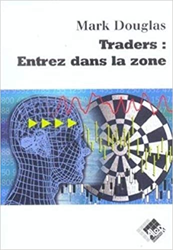

Psychologie
La psychologie, l'élement le plus complex du trading, beaucoup de trader débutant dans le millieu du trading pense qu'il faut maîtriser l'analyse technique et d'autre concept pour arriver à une rentabilité.
Mais la réalité en est tout autre
En effet car, vous avez beau connaître et maîtriser toute les élément du trading, mais si vous effectuez des prise de décisions sous l'emprise de l'emotion, vous regretterez souvent vos choix...
Pour illustrer cela, une étude à été faite qui montre que un trader dans une situation de perte active les même partie cérébral que quand l'humain est en danger de mort, le trader doit apprendre à ce connaître et à gérer ses émotions si il veut rentable.

Je vous recommande fortement ce livre par Mark Douglas qui est pour moi et pour bien d'autre le MEILLEUR livre sur la psychologie en trading.
Il n'y a pas forcément beaucoup de théorie sur la psychologie, c'est surtout la découverte de soit et comprendre nos schéma fréquent, comme réagit-on devant une certaine situation.
La psychologie ne s'apprend pas, elle se construie avec l'experience.